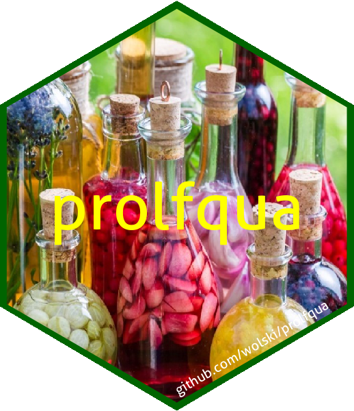

The R package contains functions for analyzing mass spectrometry based experiments. This package is developed at the FGCZ. The package documentation including vignettes can be accessed at https://fgcz.github.io/prolfqua/index.html
prolfqua makes easy things easy while remaining fully hackable.
How to install prolfqua?
Requirements : A Windows|Linux|MacOSX platform with R (>= 4.1) installed.
We recommend to install the package using the latest release Download the prolfqua_X.Y.Z.tar.gz from the github release page into your working directory. and then execute:
install.packages("./prolfqua_X.Y.Z.tar.gz",repos = NULL, type="source")To install the package without vignettes from github you can execute in R.
install.packages('remotes')
remotes::install_github('fgcz/prolfqua', dependencies = TRUE)If you want to build the vignettes on your system:
install.packages('remotes')
remotes::install_github('fgcz/prolfqua', build_vignettes = TRUE, dependencies = TRUE)Let us please know about any installation problems or errors when using the package: https://github.com/fgcz/prolfqua/issues
How to get started
How to build a LFQData object from a table with protein or peptide quantification results, and a table with sample annotation is described in more detail here the: CreatingConfigurations vignette
A minimal example for a table with protein abudances is:
#Table with abundances
df <- data.frame(protein_Id = c("tr|A|HUMAN","tr|B|HUMAN","tr|C|HUMAN","tr|D|HUMAN"),
Intensity_A = c(100,10000,10,NA),
Intensity_B = c(NA, 9000, 20, 100),
Intensity_C = c(200,8000,NA,150),
Intensity_D = c(130,11000, 50, 50))
# Table with sample annotation
annot <- data.frame(Sample = c("Intensity_A", "Intensity_B", "Intensity_C", "Intensity_D"), Group = c("A","A","B","C"))
# convert into long format
table_long <- tidyr::pivot_longer(df, starts_with("Intensity_"),names_to = "Sample", values_to = "Intensity")
table_long <- dplyr::inner_join(annot, table_long)
# create TableAnnotation and AnalysisConfiguration
config <- prolfqua::AnalysisConfiguration$new()
config$file_name = "Sample"
config$work_intensity = "Intensity"
config$hierarchy[["protein_Id"]] <- "protein_Id"
config$factors[["Group"]] <- "Group"
# Build LFQData object
analysis_data <- prolfqua::setup_analysis(table_long, config)
lfqdata <- prolfqua::LFQData$new(analysis_data, config)
lfqdata$hierarchy_counts()Once you have created an LFQData you can use prolfqua like this.
R.version.string; packageVersion("prolfqua")
## here we simulate peptide level data
startdata <- sim_lfq_data_peptide_config()
lfqpep <- LFQData$new(startdata$data, startdata$config)
## transform intensities
lfqpep <- lfqpep$get_Transformer()$log2()$robscale()$lfq
lfqpep$rename_response("log_peptide_abundance")
agr <- lfqpep$get_Aggregator()
lfqpro <- agr$medpolish()
lfqpro$rename_response("log_protein_abundance")
## plot Figure 3 panels A-D
pl <- lfqpep$get_Plotter()
panelA <- pl$intensity_distribution_density() +
ggplot2::labs(tag = "A") + ggplot2::theme(legend.position = "none")
panelB <- agr$plot()$plots[[1]] + ggplot2::labs(tag = "B")
panelC <- lfqpro$get_Stats()$violin() + ggplot2::labs(tag = "C")
pl <- lfqpro$get_Plotter()
panelD <- pl$boxplots()$boxplot[[1]] + ggplot2::labs(tag = "D")
ggpubr::ggarrange(panelA, panelB, panelC, panelD)
## specify model
modelFunction <-
strategy_lm("log_protein_abundance ~ group_")
## fit models to lfqpro data
mod <- build_model(
lfqpro,
modelFunction
)
## specify contrasts
Contr <- c("AvsCtrl" = "group_A - group_Ctrl",
"BvsCtrl" = "group_B - group_Ctrl",
"BvsA" = "group_B - group_A"
)
## determine contrasts and plot
contrastX <- prolfqua::Contrasts$new(mod, Contr)
pl <- contrastX$get_Plotter()
pl$volcano()$FDR
- Watch the silico talks
- See our article at the Journal of Proteome Research
- See Bioconductor 2021 Conference poster.
- Watch the lightning (8 min) talk at EuroBioc2020 on YouTube or slides.
- Read the pkgdown generate website https://fgcz.github.io/prolfqua/index.html
Detailed documentation with R code:
Document’s explaining how to run an analysis with prolfqua are at github.io https://fgcz.github.io/prolfqua/index.html.
Example QC and sample size report
Releated projects
- prolfquabenchmark - a package to document the performance of prolfqua, MSstats, msqrob, and proda. See documentation: [https://prolfqua.github.io/prolfquabenchmark/]
- prolfquapp: Generating Dynamic DEA Reports with the prolfqua R Package https://github.com/prolfqua/prolfquapp
- prophosqua - (scripts for the analysis of phospho experiments) https://github.com/prolfqua/prophosqua
How to cite?
Please do reference the prolfqua article at Journal of Proteome Research
@article{prolfquawolski2023,
author = {Wolski, Witold E. and Nanni, Paolo and Grossmann, Jonas and d’Errico, Maria and Schlapbach, Ralph and Panse, Christian},
title = {prolfqua: A Comprehensive R-Package for Proteomics Differential Expression Analysis},
journal = {Journal of Proteome Research},
volume = {4},
number = {22},
pages = {1092–1104},
year = {2023},
doi = {10.1021/acs.jproteome.2c00441},
note = {PMID: 36939687},
URL = {https://doi.org/10.1021/acs.jproteome.2c00441},
eprint = {https://doi.org/10.1021/acs.jproteome.2c00441}
}
Motivation
The package for proteomics label free quantification prolfqua (read : prolevka) evolved from a set of scripts and functions written in the R programming language to visualize and analyze mass spectrometric data, and some of them are still in R packages such as quantable, protViz or imsbInfer. For computing protein fold changes among treatment conditions, we first used t-test or linear models, then started to use functions implemented in the package limma to obtain moderated p-values. We did also try to use other packages such as MSStats, ROPECA or MSqRob all implemented in R, with the idea to integrate the various approaches to protein fold-change estimation. Although all these packages were written in R, model specification, input and output formats differ widely and wildly, which made our aim to use the original implementations challenging. Therefore, and also to understand the algorithms used, we attempted to reimplement those methods, if possible.
When developing prolfqua we were inspired by packages such as sf or stars which use data in long table format and dplyr for data transformation and ggplot2 for visualization. In the long table format each column stores a different attribute, e.g. there is only a single column with the raw intensities. In the wide table format there might be several columns with the same attribute, e.g. for each recorded sample a raw intensity column. In prolfqua the data needed for analysis is represented using a single data-frame in long format and a configuration object. The configuration annotates the table, specifies what information is in which column. The results of the statistical modelling are stored in data frames. Relying on the long data table format enabled us to access a large variety of useful visualizations as well as data preprocessing methods implemented in the R packages dplyr and ggplot2.
The use of an annotated table makes integrating new data if provided in long formatted tables simple. Hence for Spectronaut or Skyline text output, all is needed is a table annotation (see code snipped). Since MSStats formatted input is a table in long format prolefqa works with MSstats formatted files. For software, which writes the data in a wide table format, e.g. Maxquant, we implemented methods which first transform the data into a long format.
A further design decision, which differentiates prolfqua is that it embraces and supports R’s linear model formula interface, or R lme4 formula interface. R’s formula interface for linear models is flexible, widely used and documented. The linear model and linear mixed model interfaces allow specifying a wide range of essential models, including parallel designs, factorial designs, repeated measurements and many more. Since prolfqua uses R modelling infrastructure directly, we can fit all these models to proteomics data. This is not easily possible with any other package dedicated to proteomics data analysis. For instance, MSStats, although using the same modelling infrastructure, supports only a small subset of possible models. Limma, on the other hand, supports R formula interface but not for linear mixed models. Since the ROPECA package relies on limma it is limited to the same subset of models. MSqRob is limited to random effects model’s, and it is unclear how to fit these models to factorial designs, and how interactions among factors can be computed and tested.
The use of R’s formula interface does not limit prolfqua to the output provided by the R modelling infrastructure. prolfqua also implements p-value moderations, as in the limma publication or computing probabilities of differential regulation, as suggested in the ROPECA publication. Moreover, the design decision to use the R formula interface allowed us to integrate Bayesian regression models provided by the r-package brms. Because of that, we can benchmark all those methods: linear models, mixed effect models, p-value moderation, ROPECA as well as Bayesian regression models within the same framework, which enabled us to evaluate the practical relevance of these methods.
Last but not least prolfqua supports the LFQ data analysis workflow, e.g. computing coefficients of Variations (CV) for peptide and proteins, sample size estimation, visualization and summarization of missing data and intensity distributions, multivariate analysis of the data, etc. It also implements various protein intensity summarization and inference methods, e.g. top 3, or Tukeys median polish etc. Last but not least, ANOVA analysis or model selection using the likelihood ratio test for thousand of proteins can be performed.
To use prolfqua knowledge of the R regression model infrastructure is of advantage. Acknowledging, the complexity of the formula interface, we provide an MSstats emulator, where the model specification is generated based on the annotation file structure.
R packages to compute contrasts from linear and other models
- marginaleffects Compute and plot predictions, slopes, marginal means, and comparisons (contrasts, risk ratios, odds ratios, etc.) for over 70 classes of statistical models in R.
- emmeans Obtain estimated marginal means (EMMs) for many linear, generalized linear, and mixed models.
- lmerTest computes contrast for lme4 models
- multcomp computes contrast for linear models and adjusts p-values (multiple comparison)
What package name?
What name should we use?
https://twitter.com/WitoldE/status/1338799648149041156
- prolfqua - PROteomics Label Free QUAntification package (read prolewka)
- LFQService - we do proteomics LFQ services at the FGCZ.
- nalfqua - Not Another Label Free QUAntification package (read nalewka)
- prodea - proteomics differential expression analysis ?